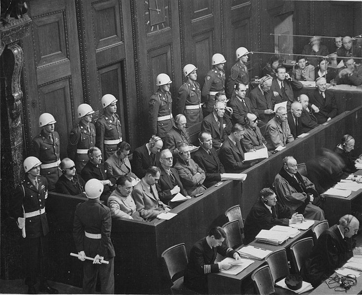
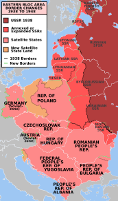

Urmări
Aliații au instaurat administrații de ocupație în Austria și Germania. Prima a devenit stat neutru, nealiniat cu vreun bloc politic. Cea din urmă a fost împărțită în zone de ocupație de est și de vest controlate de către Aliații Occidentali și, respectiv, Uniunea Sovietică. Un program de denazificare în Germania a condus la urmărirea penală a criminalilor de război naziști și la eliminarea foștilor naziști la putere, deși această politică s-a transformat treptat spre una de amnistie și de reintegrare a foștilor naziști în societatea vest-germană
Germania a pierdut un sfert din teritoriul dinainte de război (1937). Printre teritoriile de est, Silezia, Neumark și mare parte din Pomerania au fost preluate de către Polonia, Prusia de Est a fost împărțită între Polonia și URSS, urmată de expulzarea a 9 milioane de germani din aceste provincii, precum și de expulzarea a 3 milioane de germani din Regiunea Sudetă din Cehoslovacia în Germania. Prin anii 1950, fiecare al cincilea vest-german era un refugiat din est. Uniunea Sovietică a anexat și provinciile poloneze de la est de linia Curzon, din care au fost expulzați 2 milioane de polonezi; nord-estul României,părți din Finlanda de est,și cele trei state baltice au fost și ele încorporate în URSS.
Într-un efort de a menține pacea,Aliații au format Națiunile Unite, care a luat ființă oficial pe 24 octombrie 1945,și a adoptat Declarația Universală a Drepturilor Omului din 1948 ca un standard comun pentru toate țările membre.Marile puteri învingătoare în război — Statele Unite ale Americii, Uniunea Sovietică, China, Regatul Unit și Franța — au devenit membri permanenți ai Consiliului de Securitate al ONU.Cei cinci membri permanenți rămân aceeași și în prezent, deși au fost două schimbări de locuri, între Republica China și Republica Populară Chineză, în 1971, și între Uniunea Sovietică și statul ei succesor, Federația Rusă, după destrămarea Uniunii Sovietice. Alianța dintre Aliații Occidentali și Uniunea Sovietică a început să se deterioreze chiar înainte de terminarea războiului.
Germania a fost de facto împărțită, și au apărut două state independente, Republica Federală Germania și Republica Democrată Germană în granițele zonelor de ocupație aliată și, respectiv, sovietică. Restul Europei a fost, de asemenea, împărțit în sfere de influență occidentală și sovietică.Majoritatea țărilor din Europa Centrală și de Est au căzut în sfera sovietică, ceea ce a condus la instaurarea de regimuri comuniste, cu sprijin total sau parțial al autorităților sovietice de ocupație. Ca urmare, Polonia, Ungaria, Germania de Est,Cehoslovacia, România și Albania au devenit state satelit ale URSS. Iugoslavia comunistă a dus o politică complet independentă, provocând tensiuni cu URSS.
Diviziunea postbelică a lumii a fost formalizată de către două alianțe militare internaționale, NATO (în frunte cu Statele Unite) și Pactul de la Varșovia (controlat de URSS);lunga perioadă de tensiuni politice și de competiție militară între acestea, Războiul Rece, avea să fie însoțită de o cursă a înarmărilor și războaie prin intermediari
În Asia, Statele Unite au ocupat Japonia și au administrat fostele insule japoneze din Pacificul de Vest, în timp ce sovieticii au anexat Sahalinul și Insulele Kurile.Coreea, fostă sub dominație japoneză, a fost divizată și ocupată de către Uniunea Sovietică în Nord și de SUA, în Sud, între 1945 și 1948. S-au proclamat republici separate de cele două părți ale paralelei 38 în 1948, fiecare pretinzând a fi guvernul legitim pentru toată Coreea, ceea ce a condus în cele din urmă la Războiul din Coreea.
În China, naționaliștii și forțele comuniste au reluat războiul civil în iunie 1946. Forțele comuniste au fost victorioase și au proclamat Republica Populară Chineză în China continentală, în timp ce forțele naționaliste s-au retras în Taiwan în 1949.În Orientul Mijlociu, respingerea de către statele arabe a Planului ONU de Împărțire a Palestinei și înființarea Israelului a marcat escaladarea conflictului arabo-israelian. Puterile europene au încercat să-și păstreze, parțial sau total, imperiile coloniale, însă pierderile e prestigiu și de resurse în timpul războiului au făcut acest lucru imposibil, ceea ce a dus la decolonizare
Economia globală a suferit puternic de pe urma războiului, deși țările participante au fost afectate diferit. SUA a ieșit din război mult mai bogată decât orice altă națiune; acolo a avut loc un baby boom și în 1950 produsul intern brut pe cap de locuitor era mult mai mare decât al oricărei alte puteri, ea dominând economia mondială.Regatul Unit și SUA au urmărit o politică de dezarmare industrială a Germaniei de Vest în anii 1945-1948.Din cauza interdependențelor comerciale internaționale, acest lucru a dus la stagnarea economică a Europei și la întârzierea redresării economice europene.
Revenirea a început cu reforma monetară din Germania de Vest de la jumătatea anului 1948, și a fost accelerată de liberalizarea politicii economice europene cauzată, direct și indirect, de Planul Marshall (1948-1951).Revenirea economică vest germană de după 1948 a fost numită miracolul economic german.Italia a cunoscut și ea o explozie economică iar economia franceză s-a redresat.Prin contrast, Regatul Unit a rămas într-o stare de ruină economică,și, deși a primit un sfert din totalul asistenței prin Planul Marshall, mai mult decât orice altă țară europeană,a continuat o relativă scădere economică timp de zeci de ani.
În ciuda enorme pierderi umane și materiale, Uniunea Sovietică a experimentat, de asemenea, o creștere rapidă a producției în perioada imediat de după război.Japonia a avut o creștere economică incredibil de rapidă, devenind una dintre cele mai puternice economii din lume în anii 1980.China a revenit la producția industrială dinaintea războiului în 1952.